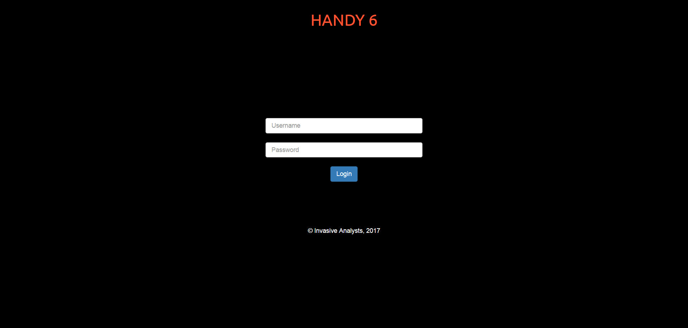

Automated Hadoop Cluster Deployment and Data Analysis
User can log into the application using appropriate credentials.

Now this dashboard screen opens up. User can select any operation i.e. Setup Hadoop/Hadoop2, See Cluster Status, Manage Docker Containers, Setup Web Server etc.
If user selects 'Setup Hadoop', this screen opens up. Now there are two options to setup hadoop cluster. Manual and On-demand.
In Manual, after entering number of datanodes, user will be asked IP addresses of namenode, jobtracker, client and all datanodes. Now this application will automatically install and
setup hadoop on all the systems. In On-demand, user don't need to enter IP addresses of any server. This application will make docker containers for namenode, jobtracker, client,
and all of the datanodes and configure hadoop in them.
When hadoop cluster setup is done, this screen opens up and shows Namspace ID of your hadoop cluster.
In this page, User can upload datasets and select the operation, user wants to perform on the dataset. If user wants to do employee satisfaction analysis (s)he can select the operation in the dropdown.
Currently, there are four operations, as mentioned above in features. Here we have selected employee satisfaction analysis. This hrdata.csv file contains
satisfaction score, salary type, experience, number of projects, job data of 14999 employees.
When analysis is done in MapReduce, Aplication fatches results from Hadoop File System and shows it right in the browser.
Add-on Utility #1: Manage Docker Containers page, User can manage all the docker containers running on server, User can add, delete, start, stop containers right from the browser.
Add-on Utility #2: Enter IP address and password of a system and make it a webserver. HANDY 6 automatically installs and configures httpd server on the system.
Human Resource Managers of an enterprise. This application is easy to use, HR Managers can upload and analyse huge datasets.
Priyansh Rastogi
Shiv Nadar University, Greater Noida
Class of 2019
Riya Phophalia
MBM Engineering College, Jodhpur
Class of 2018
Mayank Kumar
JIET, Jodhpur
Class of 2018
Chanderpal Singh
GEC, Bikaner
Class of 2018
Bhavesh Prajapati
SRM University, Chennai
Class of 2019
Rahul Gupta
JECRC, Jaipur
Class of 2018
© Priyansh Rastogi, 2017